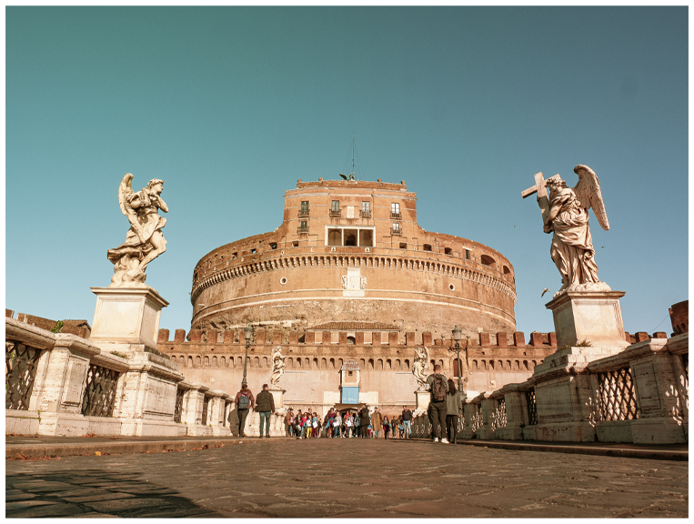
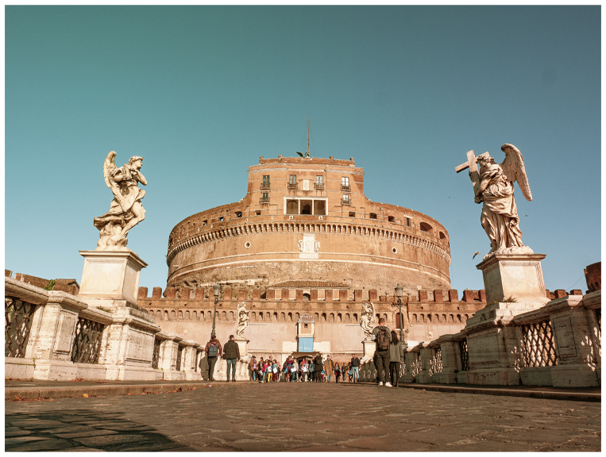
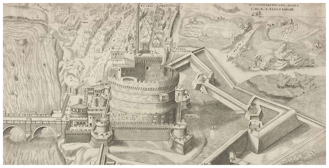
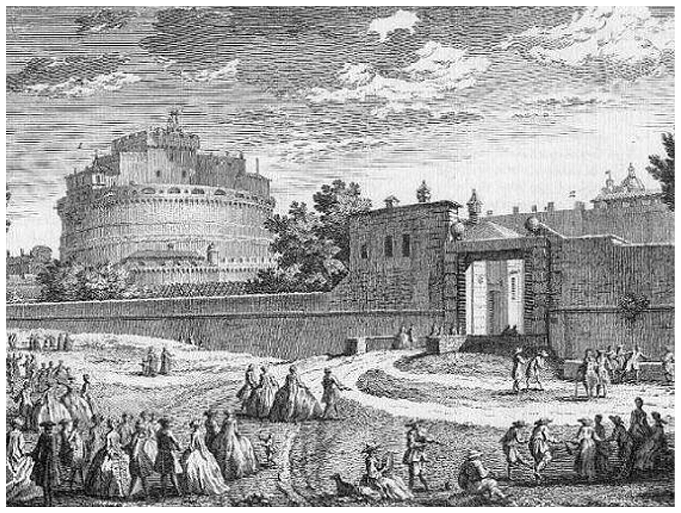

HOW IT WAS BUILT
Construction of the Mausoleum of Hadrian began around 123 AD and was completed in 139 AD under Emperor Antoninus Pius.
The monument was designed as a massive cylindrical tower of stone and concrete, once covered in shining travertine marble and decorative bronze statues.
In the 5th century, it was incorporated into Rome’s defensive walls, and during the Middle Ages, the popes transformed it into a fortress and refuge.
Built using travertine, tufa, and Roman concrete, and later additions included towers, battlements, and papal apartments.


 Click to see more info
Click to see more info